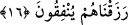
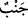

Can nezdinde secdenin safâsı, şekerin verdiği zevkten fazladır
Dünyâda kimde bu zevk yoksa, o kimse beyinsizdir.
Allâh’ım, bizi fenâ secdesi ehlinden kıl! Muhakkak ki Sen, duâları işitensin.
16. Korkuyla ve umutla Rablerine yalvarmak üzere (ibâdet ettikleri için), yanları
(vücutları) yataklardan uzak kalır ve kendilerine verdiğimiz rızıktan Allah yolunda
harcarlar.
Mü’minlerin diğer güzel vasıflarının açıklanmasına başlanarak şöyle buyrulmuştur:
“Korkuyla” Allâh’ın gazabından, azâbından ve ibâdetinin kabul edilmemesinden
korkarak “ve umutla” rahmetini umarak devamlı “Rablerine yalvarmak üzere” Allah
Teâlâ’ya duâ ve ibâdet ettikleri için “yanları (vücudları) yataklardan” ve uyudukları
yerlerden “uzak kalır.” Geceleri uyumayıp yataktan kalkarak ibâdet ve tâatle meşgul
olurlar.
“
” uzak/ırak olmak, uzaklaşmak demektir. “
ayrılmak, uzaklaşmak, kaba ve
ağır olmak” kelimesinden alınmıştır. Çünkü sana uygun davranmayan ve senden
uzaklaşan kimse, esasen sana karşı kaba davranmış ve seni terk etmiş olur.
“
” kelimesi ise “
” kelimesinin çoğuludur ve insan ya da başka bir varlığın
bir yarısını ya da bir yanını ifâde eder.
Âyette “Yanlarını yataklardan uzaklaştırırlar” değil de “uzak kalma”nın “yanlar”a
isnâd edilmesinde, yakaza ve keşf ehlinin hâlinin gaflet ve hicâb ehlinin hâli gibi
olmadığına işâret vardır. Çünkü münâcâta kemâl üzere hırs göstermeleri sebebiyle,
kendi irâdeleri olmadan uyudukları zaman onların yanları yataklardan uzaklaşır. Sanki
yer, onları kendisinden atar. Gaflet ehline gelince onlar âdetâ yere ve yatağa öyle
yapışırlar ki hiçbir şey onları yerinden oynatamaz.
Rasûlullah (s.a.), bu âyetin gece kalkıp teheccüd namazı kılan kimseler hakkında nâzil
olduğunu beyan etmiştir. Ramazan ayında tutulan oruçlardan sonra en fazîletli oruç,
şehrullah/Allâh’ın ayı olan Muharrem’de tutulan oruçlardır. Farz namazlardan sonra ise
en fazîletli namaz gece namazıdır.
Kâşifî der ki: “Gece perdesi çekilip de dünyâ ehli başlarını gaflet yastığına
koyduklarında onlar yanlarını sıcak döşekten ve yumuşak yataktan kaldırırlar ve niyaz
ayağı üzerinde dururlar, uzun gecelerde Allah Teâlâ ile sırlar konuşurlar.
Süheyl Yemenî, yâni Üveys Karanî (r.a.)’dan şöyle nakledilir: Bir gece “Bu gece
rükû gecesidir” der ve o geceyi rükûda geçirirdi. Bir başka gece, “Bu gece secde